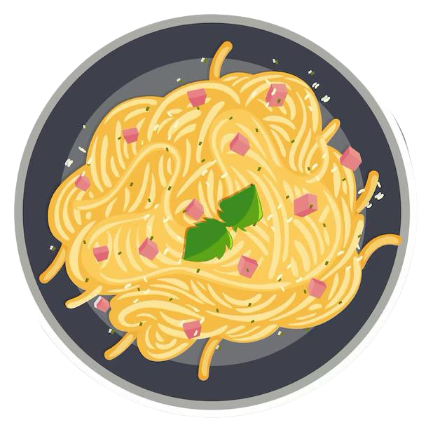

Spaghetti Carbonara Recipe
A creamy pasta dish with eggs, pancetta, and Pecorino cheese.
Ingredients
- 400g (14 oz) spaghetti
- 150g (5 oz) pancetta or guanciale, diced
- 3 large eggs
- 1 cup (100g) grated Pecorino Romano cheese (or Parmesan)
- 2 tablespoons olive oil
- 2 cloves garlic, peeled (optional)
- Salt (for pasta water)
- Freshly ground black pepper
Preparation Time
- Prep time: 10 minutes
- Cook time: 20 minutes
- Total time: ~30 minutes
Instructions
- Cook the Spaghetti:
- Bring a large pot of salted water to a boil. Add the spaghetti and cook until al dente, according to package instructions. Reserve 1 cup of pasta water before draining.
- Prepare the Sauce:
- In a bowl, whisk the eggs and mix in the grated Pecorino Romano cheese. Add a generous amount of freshly ground black pepper and set aside.
- Cook the Pancetta:
- Heat olive oil in a large skillet over medium heat. Add the diced pancetta or guanciale and sauté until crispy. If using garlic, add it to the skillet and cook until golden, then discard.
- Combine Pasta and Pancetta:
- Reduce the heat to low. Add the cooked spaghetti to the skillet with the pancetta. Toss to coat the pasta in the rendered fat.
- Mix in the Sauce:
- Remove the skillet from heat to prevent scrambling the eggs. Quickly pour the egg and cheese mixture over the pasta, tossing continuously to create a creamy sauce. Add a splash of reserved pasta water if the sauce is too thick.
- Season and Serve:
- Taste and adjust seasoning with salt (if needed) and more black pepper.
- Serve immediately, garnished with additional Pecorino Romano cheese and black pepper.
Enjoy the classic and comforting flavors of Spaghetti Carbonara, an Italian favorite!